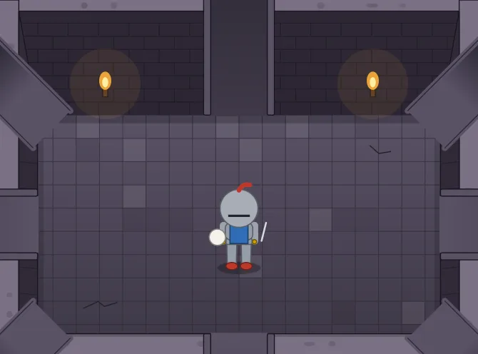
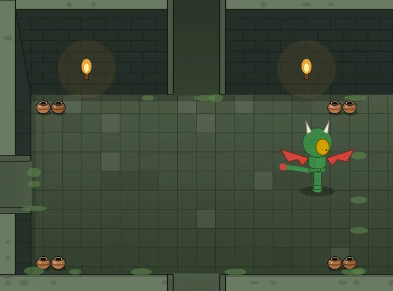
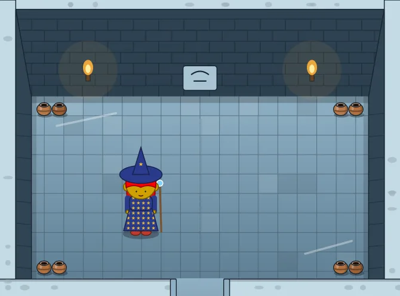
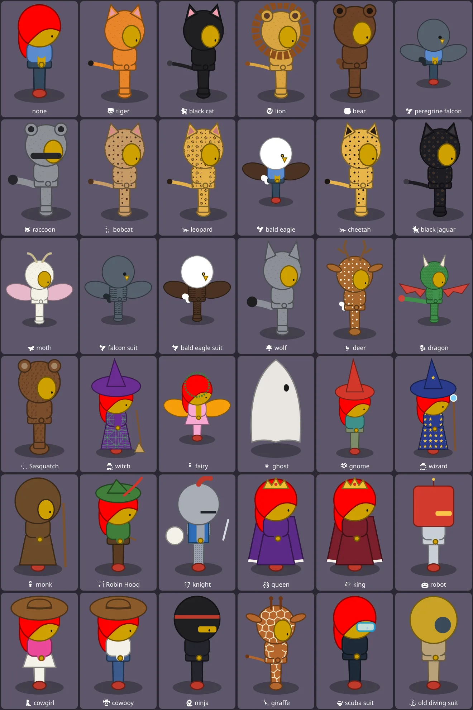
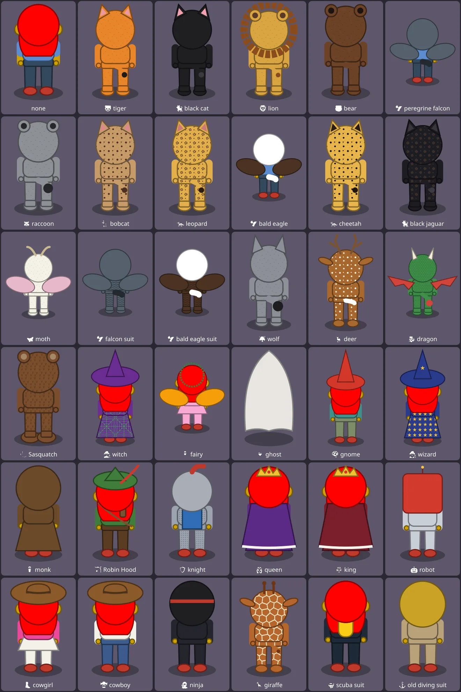
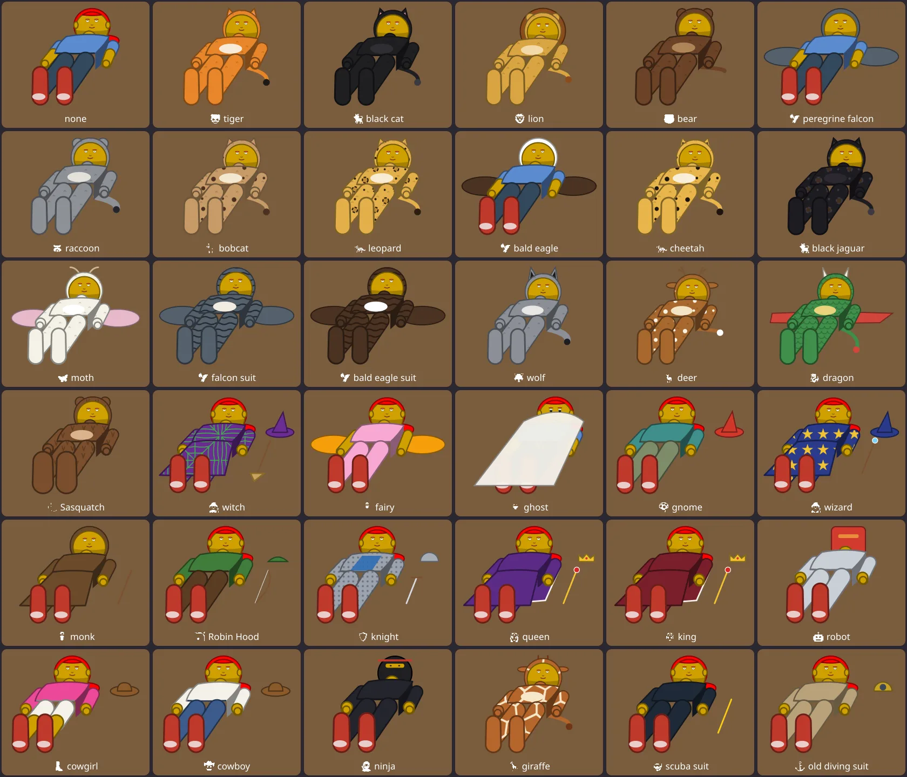
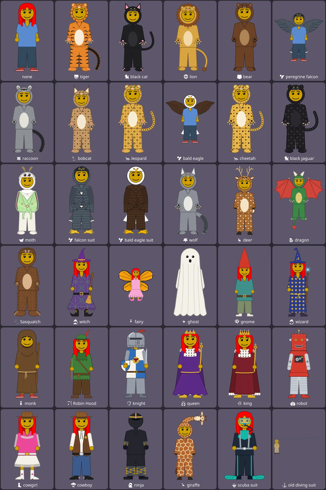

Dress Up reports · ^du_report(21) · 2026-10-26 · work in progress · about Messed Up Dress Up, a game made with M and N · after ^du_report(20)
Dungeons, From Above
A day of design work after A Link to the Past: a dungeon room seen from above, the ways between its rooms, holes and ledges, and the friend drawn from above and asleep, in every costume. Here is all of it, to look at in one place.
Short answers. Ten releases in one day, 0.0.443 to 0.0.452, all live:
- A new kind of place, the 🗝️ dungeon room. A cave room seen from above, eight ways out, four looks. Four kinds of way between rooms: 🚫 wall, 🚪 doorway with a nav arrow, 🎞️ doorway that scrolls, 🌫️ no wall at all.
- Two levels, and a floor below. A ledge with stairs, and holes that drop the friend into the world underneath.
- The friend from above. Its own drawing, now in all 36 costumes and nearly all of the friend's settings. In the morning it drew 9 of about 125 settings and no costume.
- Asleep in the tent, the same: all 36 costumes; about 20 settings and no costume before.
Everything below is drawn by the game itself (the same drawing code, its pictures saved), in the default friend, each costume with its own colours.
The dungeon room (0.0.443 – 0.0.449; ^ticket(621), ^ticket(622), ^ticket(623))
A floor of tiles; the north wall's bricks across the top with two torches; the side and south walls seen from above. Each of its eight ways that leads somewhere is an opening: a gap in a wall's middle, or a tunnel off at a corner. Each way that does not is wall, with something where a door would be: a carved stone in the north wall, a pair of pots in a corner. So any set of passages looks like a room that was built that way. Its looks are the cave crossing's: 🪨 stone, 💎 crystal, 🌿 moss, 🧊 ice. It has a group of its own at the bottom of the list of places, 🗝️ dungeons.




Four kinds of way
In 🗺️ World design, each way out of a dungeon room (or a cave crossing) has its chips; choosing one makes the room beside it agree.
| Chip | What it is | What happens | Since |
|---|---|---|---|
| 🚫 | wall | No way: wall, or stones in a cave crossing. | 0.0.443 |
| 🚪 | a doorway with a nav arrow | The friend walks to the doorway and steps through; the next room fades in. As every other place in the game. | 0.0.443 |
| 🎞️ | a doorway that scrolls | As A Link to the Past goes from screen to screen: at the doorway the room slides away and the next slides in, diagonals too. | 0.0.442 |
| 🌫️ | no wall | That side of both rooms is not there. The friend runs from one room into the next, the rooms sliding faster, and comes out at the same height (or the same place across) they crossed at. North, east, south or west, between two dungeon rooms. | 0.0.448 |
Also in the room, in World design: 🧱 a ledge (none, stairs in the middle, stairs at both ends), 🕳️ a hole (left, middle or right), and a world's ⬇️ floor below, another world square for square: walking onto the hole drops the friend into the room underneath, at the same spot, and ⬅️ back brings them up. With nothing underneath, the hole has a grate over it.
The friend from above, in every costume (0.0.443, 0.0.451; ^ticket(626))
A dungeon seen from above needs the friend seen from above too: a drawing of its own, not the standing friend squashed. The head big and seen mostly from its top, the hair over it, the body short below it, the legs shorter still; facing us, away, or to a side, and stepping as it walks.
How much of the friend it draws. The friend has about 125 settings for how it looks (face 47, hair 9, shirt 8, pants 6, shoes 7, hands 14, undies 7, see-through 8, the body's shape about 10), and 36 costumes with about 190 settings of their own.
| View | Before (0.0.443) | Now |
|---|---|---|
| From above (dungeon room) | 9 settings: skin, hair colour, style and length, shirt colour, pants colour and skirt or not, shoe colour, facing. No costume. | Every costume: its clothes and their patterns, a suit's fur, ears and tail, wings, the hat, hood, helmet or crown, a cape or a mantle, what it carries. And the friend's own: hand and foot styles, the arms' and legs' lengths and widths, the head's size, the eyes' size and kind (closed, ✕, stars, hearts), ears, mouth, all seven hair styles with length and bangs, beards, see-through. |
| Asleep in the tent | About 20: those, with the sleeves, hair style and bangs, see-through. No costume. | Every costume, as one asleep has it (below), and the same settings of the friend's own. |
Not drawn in these two views yet: the face's finer settings (brows, nose, tongue, teeth, the eyes' shine), the undies, and a friend on a horse.



Asleep in the tent, in every costume (0.0.452; ^ticket(627))
Lying along a sleeping bag (ticket 412's own view of the friend) wears every costume now, as one asleep would: a hat or a helmet taken off and lying by the pillow; what the costume carries (a broom, a staff, a sword, a bow, a scepter) beside the bag; wings or a royal mantle spread underneath; a suit's tail out on the bag; a monk's hood kept up, a robot's head, a ninja's mask; the ghost, a sheet over it all.

For comparison: standing
The same 36, as the game has always drawn them, standing and facing us. The views above are drawn to match these: the same colours, patterns and things, seen another way.

How it is built
- One look, three views. The game already turns each costume into the shirt and pants it wears (
COSTUME_CLOTHES, ^ticket(564)) and an animal suit into its fur. Both new views take those, and the standing drawing's own pattern fills, so a costume's clothes come out right in every view at once. - What is left, a table each. Only what a costume has besides clothes is drawn per costume: from above (
TD_GEAR) its hat, hood, helmet or crown, cape, wings, tail and what it holds; asleep (LIE_GEAR) the same things as one asleep has them. A new costume adds one entry to each. - Checked by drawing all of them. Each sheet here is one run over all 36 costumes; none failed to draw.
Not done yet
- Scrolling's speed on the iPad. The 🧪 page has two passes for it (walking in a dungeon room; scrolling to the next room and back). A run on M's iPad says whether the slide keeps up.
- ^ticket(624): the other poses from above (sitting, dancing, the animations), and ^ticket(625): stairs up to the floor above, and hopping down off a ledge.
- ^ticket(628): a new costume, 🗡️ the Time Wanderer: green tunic and pointed cap, belt, boots, sword and shield.
- ^ticket(629): picking up a pot and holding it overhead (the action press), and throwing it (a press of its own).
- ^ticket(630): the dungeon room's own settings: the stone's shade, moss and mushrooms (how much, five kinds each), and cracks different in each room.
- ^ticket(631): treasure chests, opened with the action press: World design chooses a recording, what comes out (12 things) and a flourish (8 new tunes), with A Link to the Past's moment of holding it up.
- ^ticket(632): a 🎒 backpack tab, a panel for each thing carried, and the backpack drawn on the friend.
Updates
2026-10-26: first draft, published as a work in progress for Matthew's review. Pictures drawn by the game (0.0.452) and saved from it: the sheets at 1320 to 1680 pixels wide, the rooms at 1200.